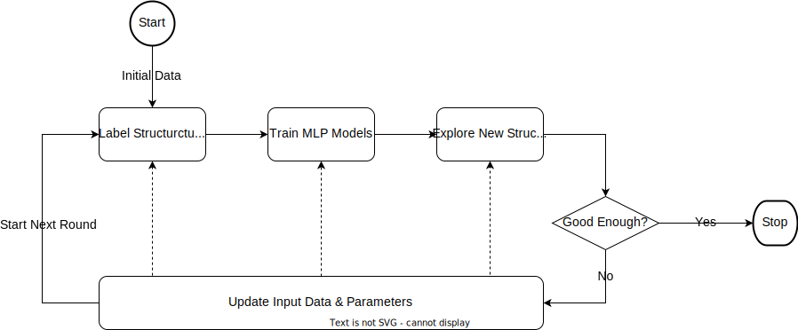

CLL MLP Training Workflow#
ai2-kit workflow cll-mlp-training
Introduction#
The CCL-MLP workflow employs the Closed-Loop Learning pattern for automatic training of MLP models. In each iteration, the workflow employs labeled structures generated by first-principle methods to train multiple MLP models. These models are then utilized to explore new structures as training data for the subsequent iteration. The iterations continue until the quality of MLP models satisfies the predetermined criteria. The configuration of each iteration can be dynamically updated to further enhance the efficiency of training.

Example#
executors:
ikkem:
ssh:
host: mu003
queue_system:
slurm: {}
work_dir: /public/home/xldu/ai2-kit/water/workdir
python_cmd: /public/software/anaconda/anaconda3-2022.5/bin/python
context:
train:
deepmd:
script_template:
header: |
#SBATCH -N 1
#SBATCH --ntasks-per-node=8
#SBATCH --job-name=deepmd
#SBATCH --partition=GPU_s
#SBATCH --gres=gpu:1
setup: |
set -e
module load anaconda/2022.5
source activate /public/groups/chenggroup/libs/deepmd/2.1.5/gpu
export OMP_NUM_THREADS=8
export TF_INTER_OP_PARALLELISM_THREADS=2
export TF_INTRA_OP_PARALLELISM_THREADS=4
set +e
explore:
lammps:
concurrency: 5
script_template:
header: |
#SBATCH -N 1
#SBATCH --ntasks-per-node=8
#SBATCH --partition=GPU_s
#SBATCH --gres=gpu:1
#SBATCH -t 48:00:00
#SBATCH --job-name=lammps
setup: |
set -e
module load anaconda/2022.5
source activate /public/groups/chenggroup/libs/deepmd/2.1.5/gpu
export OMP_NUM_THREADS=8
export TF_INTER_OP_PARALLELISM_THREADS=2
export TF_INTRA_OP_PARALLELISM_THREADS=4
set +e
label:
cp2k:
concurrency: 5
cp2k_cmd: mpirun cp2k.psmp
script_template:
header: |
#SBATCH -N 1
#SBATCH --ntasks-per-node=64
#SBATCH --job-name=cp2k
#SBATCH --partition=small_s
#SBATCH -t 48:00:00
#SBATCH --job-name=cp2k
setup: |
set -e
module load intel/oneapi2021.1
module load cp2k/7.1
set +e
artifacts:
h2o_64-init-train:
url: /public/home/xldu/ai2-kit/water/data/training.xyz
h2o_64-validation:
url: /public/home/xldu/ai2-kit/water/data/validation.xyz
attrs:
deepmd:
validation_data: true
h2o_64-explore:
url: /public/home/xldu/ai2-kit/water/data/explore
includes: POSCAR*
workflow:
general:
type_map: [ H, O ]
mass_map: [ 1.008, 15.999 ]
max_iters: 15
train:
deepmd:
model_num: 4
init_dataset: []
input_template:
model:
descriptor:
type: se_a # modify according to your system
sel:
- 100
- 100
rcut_smth: 0.5
rcut: 5.0
neuron:
- 25
- 50
- 100
resnet_dt: false
axis_neuron: 16
seed: 1
fitting_net:
neuron:
- 240
- 240
- 240
resnet_dt: true
seed: 1
learning_rate:
type: exp
start_lr: 0.001
decay_steps: 2000
loss:
start_pref_e: 0.02
limit_pref_e: 2
start_pref_f: 1000
limit_pref_f: 1
start_pref_v: 0
limit_pref_v: 0
training:
numb_steps: 400000
seed: 1
disp_file: lcurve.out
disp_freq: 1000
save_freq: 1000
save_ckpt: model.ckpt
disp_training: true
time_training: true
profiling: false
profiling_file: timeline.json
label:
cp2k:
limit: 100
init_system_files: [ h2o_64-init-train, h2o_64-validation ]
input_template: |
&GLOBAL
PROJECT DPGEN
&END GLOBAL
&FORCE_EVAL
&DFT
BASIS_SET_FILE_NAME /public/home/xldu/BASIS/BASIS_MOLOPT
POTENTIAL_FILE_NAME /public/home/xldu/POTENTIAL/GTH_POTENTIALS
WFN_RESTART_FILE_NAME /public/home/xldu/ai2-kit/water/data/DPGEN-RESTART.wfn
CHARGE 0
UKS F
&MGRID
CUTOFF 600
REL_CUTOFF 60
NGRIDS 4
&END MGRID
&QS
EPS_DEFAULT 1.0E-12
&END QS
&SCF
SCF_GUESS RESTART
EPS_SCF 3.0E-7
MAX_SCF 50
&OUTER_SCF
EPS_SCF 3.0E-7
MAX_SCF 10
&END
&OT
MINIMIZER DIIS
PRECONDITIONER FULL_SINGLE_INVERSE
ENERGY_GAP 0.1
&END
&END SCF
&LOCALIZE
METHOD CRAZY
MAX_ITER 2000
&PRINT
&WANNIER_CENTERS
IONS+CENTERS
FILENAME =64water_wannier.xyz
&END
&END
&END
&XC
&XC_FUNCTIONAL PBE
&END XC_FUNCTIONAL
&vdW_POTENTIAL
DISPERSION_FUNCTIONAL PAIR_POTENTIAL
&PAIR_POTENTIAL
TYPE DFTD3
PARAMETER_FILE_NAME dftd3.dat
REFERENCE_FUNCTIONAL PBE
&END PAIR_POTENTIAL
&END vdW_POTENTIAL
&END XC
&END DFT
&SUBSYS
&KIND O
BASIS_SET DZVP-MOLOPT-SR-GTH
POTENTIAL GTH-PBE-q6
&END KIND
&KIND H
BASIS_SET DZVP-MOLOPT-SR-GTH
POTENTIAL GTH-PBE-q1
&END KIND
&END SUBSYS
&PRINT
&FORCES ON
&END FORCES
&END PRINT
&END FORCE_EVAL
explore:
lammps:
timestep: 0.0005
sample_freq: 100
tau_t: 0.1
tau_p: 0.5
nsteps: 10000
ensemble: nvt
post_init_section: |
neighbor 1.0 bin
box tilt large
post_read_data_section: |
change_box all triclinic
system_files: [ h2o_64-explore ]
explore_vars:
temp: [330, 430, 530]
pres: [1]
select:
by_threshold:
f_trust_lo: 0.06
f_trust_hi: 0.18
update:
walkthrough:
table: []